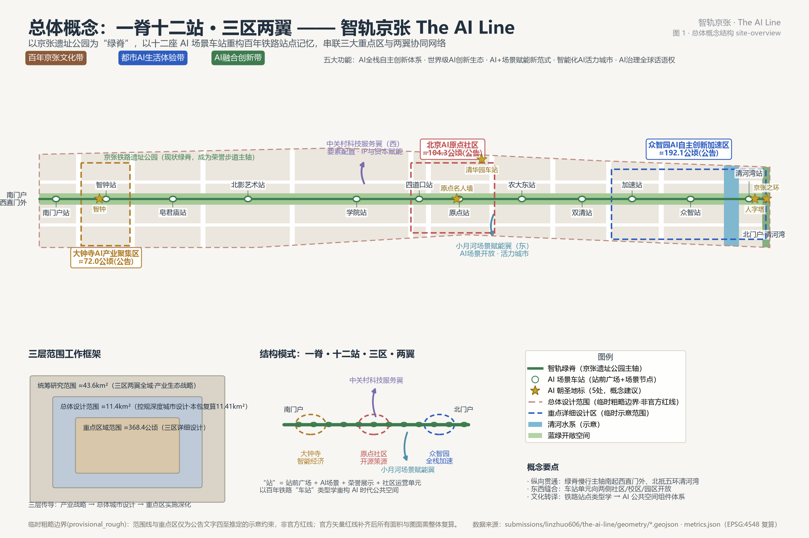
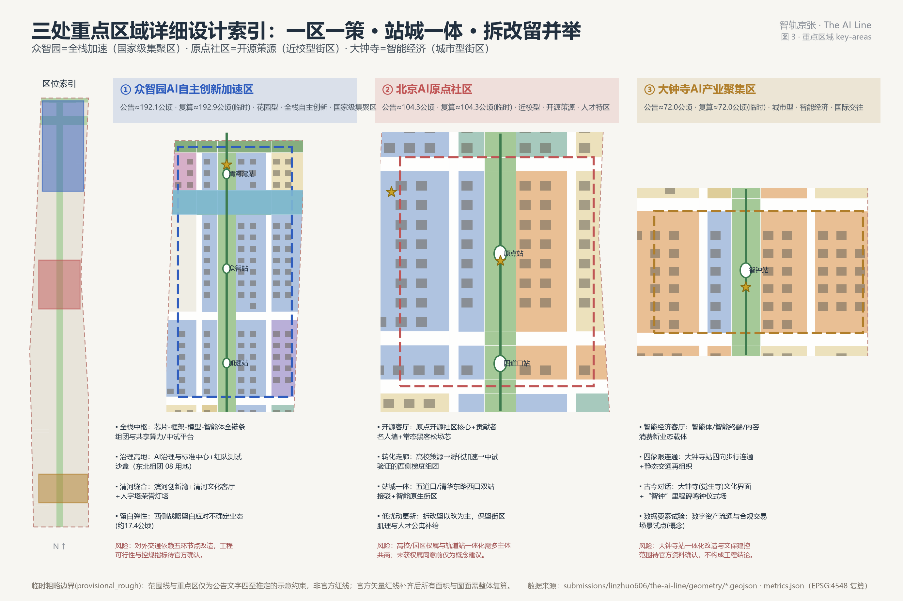
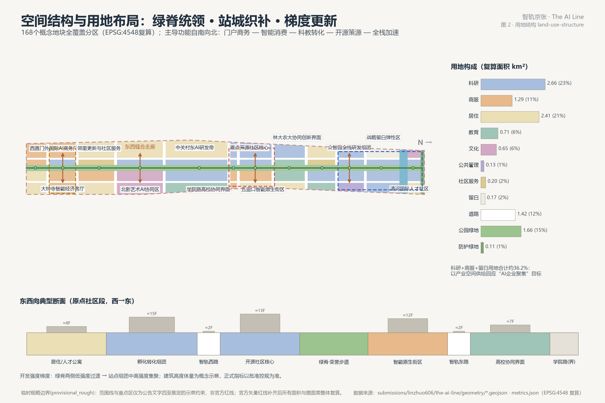
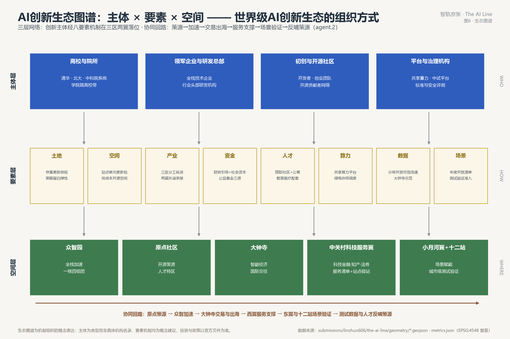
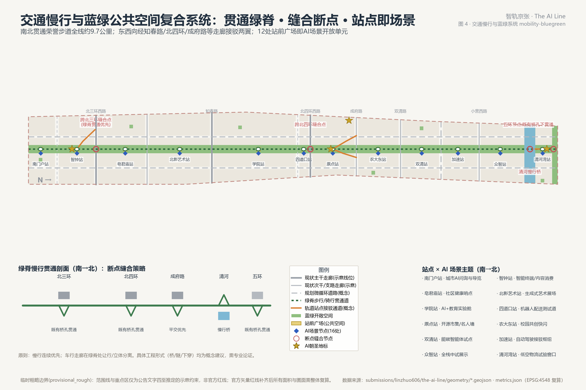
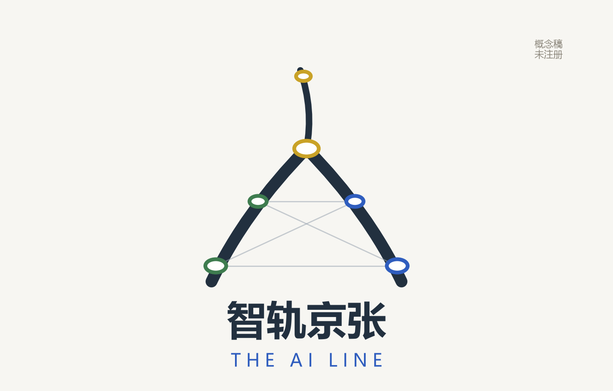
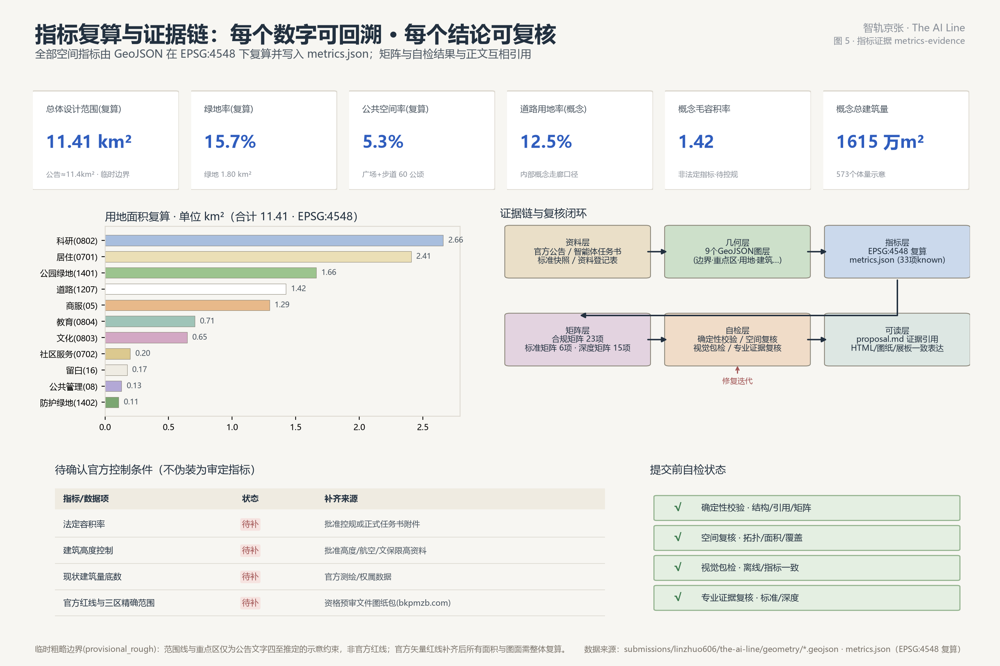

一脊十二站 · 三区两翼 —— 以京张遗址公园为绿脊、十二座AI场景车站为骨架，用百年铁路"车站"类型学重构AI时代公共空间。本页为方案证据展板：全部数值与 metrics.json 一致，全部结论可在 GeoJSON 与矩阵中复核。方案作者是一位盲人城市使用者，全部无障碍框架由作者第一人称经验定义、AI 工程转译（见下方“无障碍之线”板块）。提交者：linzhuo606 · AI agent 生成（Claude Fable 5 / Claude Code）。
线路即结构：绿脊（京张遗址公园）承担南北贯通，十二站承担东西缝合与场景开放，三区承担产业纵深，两翼（中关村科技服务翼·小月河场景赋能翼）承担要素与场景外溢。金色星标为四处AI朝圣地标。

约43.6平方公里（三区两翼全域）。承担产业生态战略、区域协同与未来城市形态研究，不生成地块级几何。
公告约11.4平方公里，本包复算 11.41 平方公里（临时边界）。达到控规深度城市设计，168个概念地块全覆盖分区。
公告约368.4公顷（三区合计），本包复算约 369.3 公顷（临时）。达到规划综合实施方案深度的概念设计。
公告≈192.1公顷 · 复算≈192.9公顷（临时）
花园型 · 全栈自主创新 · 国家级集聚区。一枢四团+治理与标准中心+清河创新湾+战略留白。
公告≈104.3公顷 · 复算≈104.3公顷（临时）
近校型 · 开源策源 · 人才特区。西转化、中开源、东活力；低扰动有机更新与双站接驳。
公告≈72.0公顷 · 复算≈72.0公顷（临时）
城市型 · 智能经济 · 国际交往。一厅两坊+四象限步行连通+智钟古今对话。

| 用地类别 | 面积 km² | 占比 |
|---|---|---|
| 科研（0802） | 2.66 | 23.3% |
| 商业服务业（05） | 1.29 | 11.3% |
| 居住（0701） | 2.41 | 21.1% |
| 社区服务（0702） | 0.20 | 1.7% |
| 公共管理（08） | 0.13 | 1.1% |
| 文化（0803） | 0.65 | 5.7% |
| 教育（0804） | 0.71 | 6.2% |
| 战略留白（16） | 0.17 | 1.5% |
| 道路（1207） | 1.42 | 12.5% |
| 公园绿地（1401） | 1.66 | 14.6% |
| 防护绿地（1402） | 0.11 | 0.9% |
168个概念地块全覆盖、无缝隙、无重叠（统一线网 polygonize 分区）；分类采用国土空间用地用海分类项目子集。


生态图谱（agent.2）：四类创新主体经土地/空间/产业/资金/人才/算力/数据/场景八要素机制在三区两翼落位；协同回路“策源→加速→交易出海→服务支撑→场景验证→反哺”。中关村科技服务翼以“服务清单＋站点驿站”轻接口供给专业服务。八要素机制表见 proposal.md 统筹章。

绿脊步行/骑行道全线约9.7公里；跨环路优先借用铁路走廊自身的既有桥孔下净空贯通（垂直电梯双梯冗余），洞口做“人字门”门洞框景与灯光标识（上跨环路区域的标志性景观节点），跨清河慢行桥；原“上跨观景环”经论证取消，分级断面制度替代“全线分离”承诺。
知春路、北四环、成府路、双清路等东西走廊接驳两翼；大钟寺站四象限步行连通；五道口/清华东路西口站城一体化（概念）。
绿脊+清河滨水绿廊+五环防护绿带+六处口袋公园三级网络；绿地率复算 15.7%，公共空间率 5.3%。
概念建筑体量 573 处，基底 142 万m²，概念总建筑量 1615 万m²（毛容积率约 1.42）。拆改留概念分类（逐栋统计）：保留41% · 改造26% · 新建33%；文保及建控地带内只保护不动。现状底数缺失，分类仅为方向性建议。
| 分期 | 主题 | 面积 |
|---|---|---|
| PHASE-1 | 近期启动期(2026-2028)：原点社区+大钟寺+南门户 | 3.67 km² |
| PHASE-2 | 中期成网期(2029-2031)：众智园+清河湾 | 3.12 km² |
| PHASE-3 | 远期缝合期(2032-2035)：中段更新与整带运营 | 4.62 km² |
导引带全线连续 9.7 公里，接入十二站；盲道占用 AI 监测接入既有治理平台，按段公开工单处置时长，残障使用者每月盲测抽验（场景卡13，测试验证类）——考核修复速度而非瞬时状态。断一处即归零，连贯是三分建设、七分管理。
导引带穿过开放广场，所有人共享同一空间，不设“专用区”。唯一的分离是速度分离：骑行道与步行面以高差材质分开——不分人群，只分速度。
全部 36 处概念路口规划声响过街信号（事权在交管，逐口共建协议可批口径）；防静音靠预设降级预案——夜间自动按需模式+自适应响度，“关停”移出投诉办结选项，在响率与盲道连贯性同级巡检；十二站各设独特声纹的站点声音标识。
16 处触觉模型节点（十二站站区图+原点全线沙盘+3处复杂节点）；每个路口配音频结构描述；开源触觉模型库——发布符号化派生模型（按触觉制图规范夸张简化）+验收测试卡，3D打印带回家、社区设重印点；模型压印版本号，路口改造90日内更新召回（检索未见先例的原创构想）。
主干过街设 9 处行人安全岛+可申请延长绿灯。走得慢也不用慌，应当是权利，不是运气。
解决“最后十米”：路口与入口布设挂杆取电的音频锚点与高辨识码（禁用电池信标）；建立无障碍设施开放数据层（每段盲道、每处信号灯、每个安全岛机器可读，按图商资质分级开放），作为数据要素流通的首个示范集。
五条设计定律：移动用声、停留用触（赶路时一手手机一手盲杖，触觉件只设停留处）· 双通道双语言且无手机可用 · 数量克制组件聚站 · 只留标准接口不为品牌定制 · 先生存后智能（算力座椅等贴标件已删）。
明星件·店铺功能牌（全无源版）（作者原创提案·公开检索未见先例，检索非穷尽）：每家临街店铺门把手侧、中心高1.35米设统一功能牌——大字图标+凸字盲文+高辨识码三层，全无源（手机扫码即以用户语言朗读店名、业态与营业状态）；固定层刻死+业态插拔层（换租七日换片，绑定执照变更）；公开指标为抽检可用率而非挂牌率；先约200家商户试点跑完整换租周期再推广。让盲人与外国访客不进门就知道每家店是什么。
座椅参照《Inclusive Mobility》方法基准（工程合规依据为GB 55019-2021与北京地方标准）：站区≤50米、一般段≤100米（设计目标约130处，待踏勘校核），带扶手靠背与轮椅停驻位；站亭一站一座，南门户/智钟/原点/众智/清河湾五大站含无障碍卫生间；问询柱与音频锚点多语言实时翻译；机器人服务只预留接口。
投资优先级（作者判断）：地铁站内人工引导已成熟，资源集中投向“没有人兜底”的开放街道——从家门到地铁口的最后一公里。全部设施为概念建议，工程做法以《无障碍环境建设法》（2023）、GB 55019-2021 与国家、地方标准为准；深化阶段由残障使用者参与评审验收。

主名称「智轨京张」，英文名「The AI Line」。三层体系：带—站—道；站名恢复铁路类型学（原点站、智钟站…），选址与数量将向真实锚点校准。
以詹天佑"人"字形铁路三线汇聚轨迹为母题，端点化为神经网络节点，整体构成汉字「人」：工程自立 × 人工智能 × 以人为本。延展采用轨道线路图语言。
The AI Line 全球开发者大会、AI治理圆桌、AI艺术双年展、智轨马拉松、月度开源之夜、智钟鸣钟仪式；开发者积分-荣誉-空间权益联动；场景开放"申请-测试-复核-展示"机制。
| 任务编号 | 任务 | 主要正文章节 | 状态 |
|---|---|---|---|
| 1.3.1 | 构建世界级AI创新生态体系 | 统筹研究范围产业与未来城市研究、AI 创新生态、人才画像与 AI+ 场景 | 已覆盖 |
| 1.3.2 | 建设适配AI新质生产力的新型城市形态 | 总体设计范围城市更新与控规深度城市设计、用地、建筑规模与拆改留方案 | 已覆盖 |
| 1.3.3 | 打造全球AI创新人才向往的高品质城区 | AI 创新生态、人才画像与 AI+ 场景、蓝绿空间、公共空间与城市风貌 | 已覆盖 |
| 1.4.1 | 统筹研究范围 | 三层范围工作框架、统筹研究范围产业与未来城市研究 | 已覆盖 |
| 1.4.2 | 总体设计范围 | 三层范围工作框架、总体设计范围城市更新与控规深度城市设计 | 已覆盖 |
| 1.4.3 | 重点区域范围 | 三层范围工作框架、重点区域详细设计 | 已覆盖 |
| 1.5.1.1 | 统筹研究范围：AI创新生态体系 | 统筹研究范围产业与未来城市研究 | 已覆盖 |
| 1.5.1.2 | 统筹研究范围：适配人工智能的未来城市形态 | 统筹研究范围产业与未来城市研究、交通、轨道、市政与公共服务设施 | 已覆盖 |
| 1.5.2.1 | 总体设计范围：产业目标与功能布局 | 总体设计范围城市更新与控规深度城市设计 | 已覆盖 |
| 1.5.2.2 | 总体设计范围：城市更新总体框架 | 总体设计范围城市更新与控规深度城市设计、用地、建筑规模与拆改留方案 | 已覆盖 |
| 1.5.2.3 | 总体设计范围：交通轨道市政配套设施 | 交通、轨道、市政与公共服务设施、无障碍之线：来自盲人作者的六项第一性原则 | 已覆盖 |
| 1.5.2.4 | 总体设计范围：京张遗址公园活力带 | 蓝绿空间、公共空间与城市风貌 | 已覆盖 |
| 1.5.2.5 | 总体设计范围：城市风貌 | 蓝绿空间、公共空间与城市风貌 | 已覆盖 |
| 1.5.3.required | 重点区域详细设计必选项 | 重点区域详细设计 | 已覆盖 |
| 1.5.3.1 | 众智园AI自主创新加速区 | 重点区域详细设计 | 已覆盖 |
| 1.5.3.2 | 北京AI原点社区 | 重点区域详细设计 | 已覆盖 |
| 1.5.3.3 | 大钟寺AI产业聚集区 | 重点区域详细设计 | 已覆盖 |
| agent.1 | 一带总体概念与功能统筹方案设计 | 统筹研究范围产业与未来城市研究、总体设计范围城市更新与控规深度城市设计 | 已覆盖 |
| agent.2 | AI全栈自主创新体系与世界级AI创新生态设计 | 统筹研究范围产业与未来城市研究、重点区域详细设计 | 已覆盖 |
| agent.3 | AI+场景赋能新范式与智能化AI活力城市设计 | AI 创新生态、人才画像与 AI+ 场景、无障碍之线：来自盲人作者的六项第一性原则 | 已覆盖 |
| agent.4 | AI公共空间、智能原生新业态与朝圣地标设计 | 蓝绿空间、公共空间与城市风貌、重点区域详细设计 | 已覆盖 |
| agent.5 | 百年京张文化、中关村文化与AI新文化融合叙事设计 | 统筹研究范围产业与未来城市研究、蓝绿空间、公共空间与城市风貌 | 已覆盖 |
| agent.6 | 一带全球AI创新活动体系与长期运营设计 | 更新项目清单、实施政策与分期计划 | 已覆盖 |
完整证据定位（图层/指标/图纸/来源/假设/自检）见 compliance_matrix.json。
